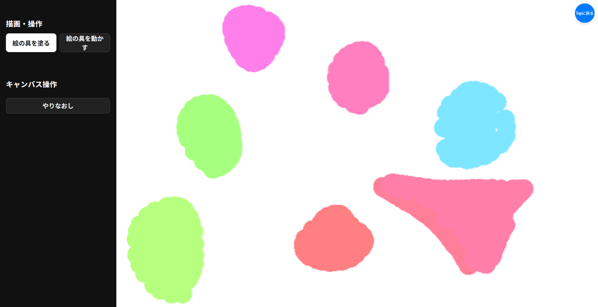
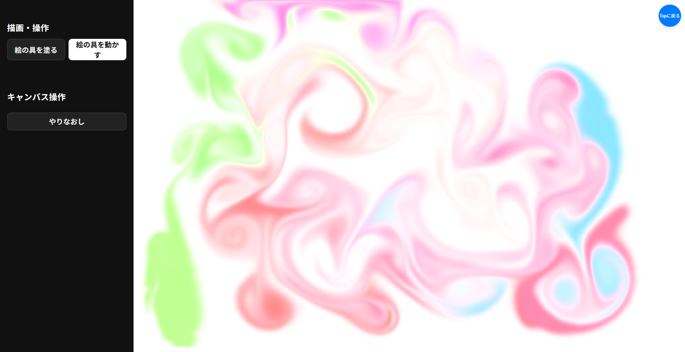

<!DOCTYPE html>
<html>
    <head>
        <meta charset="utf-8">
        <meta http-equiv="Cache-Control" content="no-cache">

        <meta name="viewport" content="width=device-width, initial-scale=1.0, user-scalable=no">
        <meta name="apple-mobile-web-app-status-bar-style" content="black-translucent">
        <meta name="apple-mobile-web-app-capable" content="yes">
        <meta name="mobile-web-app-capable" content="yes">

        <!-- <link rel="apple-touch-icon" href="logo.png">
        <link rel="icon" href="logo.png"> -->

        <title>防災×市民科学×アート 体験ツール</title>
        <meta name="description" content="A WebGL fluid simulation that works in mobile browsers.">

        <!-- <meta property="og:type" content="website">
        <meta property="og:title" content="Webgl Fluid Simulation">
        <meta property="og:description" content="A WebGL fluid simulation that works in mobile browsers.">
        <meta property="og:url" content="https://paveldogreat.github.io/WebGL-Fluid-Simulation/">
        <meta property="og:image" content="https://paveldogreat.github.io/WebGL-Fluid-Simulation/logo.png"> -->

        <link rel="stylesheet" type="text/css" href="taiken.css"></link>

        <script>
            window.ga=window.ga||function(){(ga.q=ga.q||[]).push(arguments)};
            // ga.l=+new Date;
            // ga('create', 'UA-105392568-1', 'auto');
            // ga('send', 'pageview');
        </script>
        <!-- <script async src="https://www.google-analytics.com/analytics.js"></script> -->
    </head>
    <body>
        <div id="app">
            <aside id="controls" aria-label="コントロール">
                <section>
                    <div class="section-header">
                        <h2><ruby>絵<rt>え</rt></ruby>をかくボタン</h2>
                    </div>
                    <div class="mode-toggle">
                        <button id="ctrl-mode-paint" class="mode-btn">🎨<ruby>絵の具<rt>えのぐ</rt></ruby>をぬる</button>
                        <button id="ctrl-mode-fluid" class="mode-btn">🌀<ruby>絵の具<rt>えのぐ</rt></ruby>をうごかす</button>
                    <button id="clear-canvas-btn" class="control-btn">やりなおし</button>
                </section>
            </aside>
            <main id="stage">
                <canvas></canvas>
            </main>
        </div>
        <!-- ✅ スタート画面（動画ループ＋はじめる） -->
        <div id="purpose-message" class="purpose-message purpose-start" role="dialog" aria-label="スタート画面">
        <h2 class="purpose-title">🎨 えのぐをうごかしてみよう！</h2>

        <!-- ✅ iPad向け：muted + playsinline + loop -->
        <!-- ★あなたの動画ファイルを video/marbling-demo.mp4 に置いてね -->
        <div class="purpose-videoWrap">
            <video id="start-video" class="purpose-video" autoplay loop muted playsinline webkit-playsinline preload="auto">
            <source src="video/marbling-demo.mp4" type="video/mp4">
            </video>
            <div class="purpose-videoHint">（うごいてる えがみえるよ）</div>
        </div>

        <p class="purpose-sub purpose-sub-simple">
            ゆびで なぞると<br>
            えのぐが まざって もようが できるよ
        </p>

        <div class="purpose-actions">
            <button id="start-btn" class="purpose-startBtn">はじめる</button>
            <button id="howto-btn" class="purpose-howtoBtn">あそびかた</button>
        </div>

        <!-- ✅ あそびかた（最小・読む量を減らす） -->
        <div id="howto-panel" class="purpose-howtoPanel" hidden>
            <div class="purpose-steps">
            <figure class="purpose-step">
                
                <figcaption>①「ぬる」で かいてみよう</figcaption>
            </figure>

            <div class="purpose-arrow">➜</div>

            <figure class="purpose-step">
                
                <figcaption>②「うごかす」で まぜてみよう</figcaption>
            </figure>
            </div>

            <p class="purpose-hint">※ いつでも「やりなおし」ができるよ</p>
        </div>

        <!-- ✅ 画面どこでも開始できる（子どもが押しやすい） -->
        <p class="purpose-tapHint">（がめんを タップでも はじめられるよ）</p>
        </div>
        <div id="cta-modal" class="cta-modal" style="display: none;">
            <div class="cta-content">
                <button class="cta-close" aria-label="ポップアップを閉じる">×</button>
                <h2>素敵な色のマーブリングになりましたね 😊</h2>
                ワークショップでは
                <p>街の災害リスクと結びつけて作品にします。</p>
                <button id="cta-button" onclick="window.open('https://docs.google.com/forms/d/e/1FAIpQLSeSGh8sGe47gxGbr9ikMCzr5L-RHMObzyRJo4onLc4fnZEitw/viewform', '_blank')">
    WSへの申し込みはこちら！
</button>
            </div>
        </div>
        <div id="landscape-warning" class="landscape-warning" style="display: none;">
            <div class="warning-content">
                
                <p>横画面でご利用ください</p>
            </div>
        </div>
        <button id="back-to-home" class="back-to-home">Topに戻る</button>
        <script src="taiken.js"></script>
        <script>
            function enforceLandscape() {
                const warning = document.getElementById('landscape-warning');
                if (window.innerHeight > window.innerWidth) {
                    // 縦画面の場合、警告を表示
                    warning.style.display = 'flex';
                } else {
                    // 横画面の場合、警告を非表示
                    warning.style.display = 'none';
                }
            }

            // 初期化時と画面サイズ変更時にチェック
            window.addEventListener('resize', enforceLandscape);
            window.addEventListener('load', enforceLandscape);

            document.getElementById('back-to-home').addEventListener('click', () => {
    window.location.href = '/bo-sci-2025-lp/'; // トップページのURLを指定
});
        </script>
    </body>
</html>